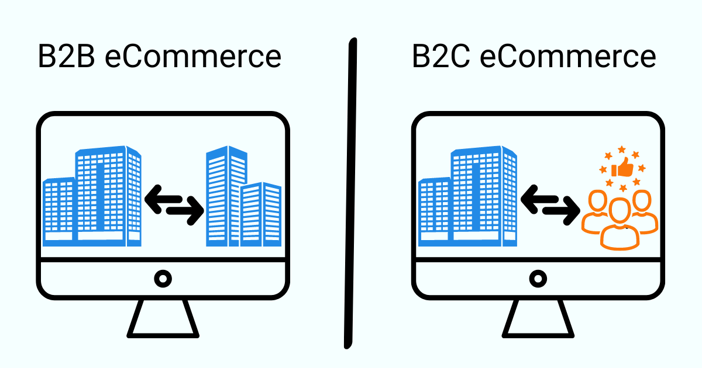

.jpg)
Fresno é uma banda brasileira de rock formada em 1999 em Porto Alegre. A banda atualmente é formada pelo cearense, naturalizado gaúcho, Lucas Silveira (voz e guitarra), pelo gaúcho Gustavo Mantovani (guitarra) e pelo pernambucano Thiago Guerra (bateria).[1][2] Hoje a Fresno se consolida como uma das maiores bandas do cenário Emo brasileiro. Atualmente, os integrantes da banda estão radicados em São Paulo. Em 2006, para substituir o baixista Lezo, Rodrigo Tavares foi convidado a entrar na banda. Em 2008, o baterista Rodrigo Ruschel, também conhecido como "Bell", substituiu Cuper. Em 2012, o tecladista Mario Camelo, que está com a banda desde 2010 foi efetivado na Fresno. A banda foi um quinteto por pouco tempo, pois dias depois o baixista Rodrigo Tavares saiu para dar total atenção a seu projeto solo, Esteban; e também, para ser guitarrista de Humberto Gessinger.[3][4] A banda optou por não substituir o antigo baixista. Em agosto de 2013, a banda anunciou a troca do baterista Bell Ruschel por Thiago Guerra. Em 2021, Mario Camelo, tecladista da banda saiu da banda para seguir um novo rumo.[5]